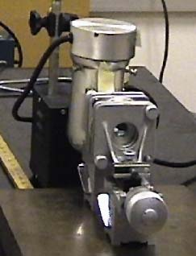
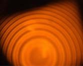
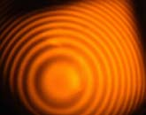

Sodium Doublet on Fabry-Perot
|  |
The photo at left is an example of a commercial Fabry-Perot device. The mirrors are mounted on sturdy vertical platforms with apertures for viewing the light through the mirror pair. The adjustment screws allow you to adjust the mirrors for precise parallel alignment. The micrometer screw in the foreground moves one of the mirrors to adjust the mirror spacing. These mirrors are mounted on heavy magnetic bases which hold the mirror mounts firmly on a heavy steel plate for stability. A sodium vapor lamp can be seen behind the interferometer. The images below show a sequence of the appearances of the interference fringes of the sodium doublet produced by Fabry-Perot optics as the mirror separation is increased. The sodium doublet produces a characteristic double-ring pattern at one value of phase as shown at left below. As the micrometer is advanced, the rings merge. When you have advanced far enough to reach the double-ring pattern again, you have advanced the shorter wavelength one order compared to the longer wavelength. |
|  |

|  |
Interference concepts
Example of sodium doublet
| HyperPhysics***** Light and Vision | R Nave |